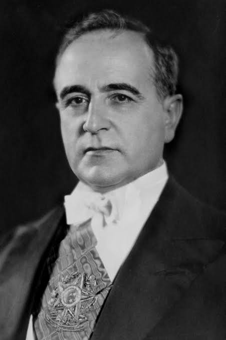
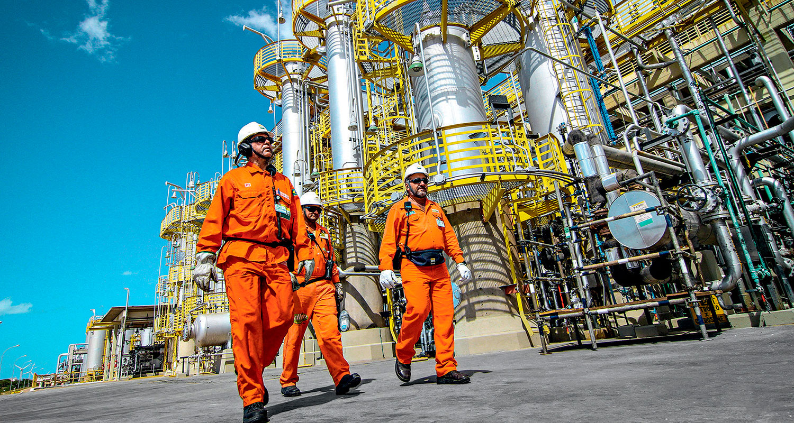

Miguel Morais - Laboratorio 01
A Petrobras
A Petrobras, a maior petrolífera do Brasil, foi fundada em 1953, pelo presidente Getúlio Vargas (1882-1954). A sua criação está ligada ao processo de desenvolvimento da industrialização brasileira, e sua história é marcada por vultuosos investimentos em pesquisa e desenvolvimento. Essa característica culminou no incremento tecnológico e humano, assim como permitiu à Petrobras o pioneirismo da exploração de petróleo em águas profundas.
Na atualidade, a Petrobras é uma empresa de capital misto, e o governo brasileiro detém a maior parte das ações da companhia. Porém, nos últimos anos, a ação estatal na empresa tem diminuído. Além disso, há um grande interesse por parte do governo e dos demais acionistas em sua privatização. Nesse contexto, torna-se necessário destacar que a Petrobras é muito importante para o Brasil, uma vez que o petróleo é um recurso energético estratégico e a companhia está entre as principais geradoras de royalties para o país.
O que é a Petrobras?
A Petrobras, cujo nome oficial é Petróleo Brasileiro S/A, é a maior empresa petrolífera do Brasil. Ela foi criada no dia 3 de outubro de 1953, durante o governo de Getúlio Vargas (1882-1954)
 como uma empresa estatal de petróleo. Na época em que surgiu, a criação da empresa era vista como uma garantia de monopólio do setor petrolífero por parte do Estado. Porém, em 1997, houve a quebra desse monopólio, e o mercado brasileiro foi aberto para a atuação de outras empresas petrolíferas. Mesmo assim, a Petrobras se consolidou no cenário nacional como a maior empresa do ramo petrolífero do país e uma das maiores do mundo.
Na atualidade, a Petrobras é uma empresa de economia mista, ou seja, possui capital aberto. Desse modo, ela não é mais uma empresa estatal, apesar de o Estado brasileiro ser o seu principal acionista.
A Petrobras atua na exploração, produção e comercialização de petróleo, gás natural e alguns derivados, possuindo plataformas de petróleo, refinarias e redes de distribuição. Nos últimos anos, ela tem expandido sua atuação para os setores de energia renovável e está presente em 19 países da América, África, Ásia e Europa.
História da Petrobras
A história da Petrobras está ligada ao início do processo de industrialização do Brasil. A criação da empresa partiu de uma intensa mobilização da sociedade civil, entidades privadas e entes governamentais, por meio da campanha “O petróleo é nosso”, que defendia a participação direta do Estado na produção de petróleo no Brasil. Desse modo, o presidente da época, Getúlio Vargas (1882-1954), por meio de políticas nacionalistas e desenvolvimentistas, anunciou a criação da empresa. A Petrobras surgiu em um momento de forte intervenção do Estado na industrialização do Brasil, por meio do fomento às chamadas indústrias de base, unidades voltadas para a produção de matérias-primas para outros ramos da economia.
A criação da Petrobras foi instituída em 1953, e a instalação da sua sede, na cidade do Rio de Janeiro, em 1954. Em 1961, na cidade de Duque de Caxias (RJ), foi instalada a primeira refinaria de petróleo da empresa. Mediante a importância de se estabelecer no mercado nacional e mundial de petróleo, a Petrobras criou, em 1963, um centro de pesquisa e desenvolvimento, chamado de CENPES, a fim de realizar pesquisas sobre novas formas de exploração e produção de petróleo.
Além desses fatos que marcaram o início da empresa, foram momentos importantes da história da Petrobras:
- a criação da Petrobras Distribuidora (1971), responsável pela distribuição de petróleo e derivados beneficiados pela empresa;
e
- a descoberta da Bacia de Campos (1974), localizada na costa do estado do Rio de Janeiro, sendo uma das maiores áreas de produção de petróleo do país.
Já em 1997, foi instituída a quebra do monopólio da empresa com relação à exploração de petróleo no Brasil. Desse modo, a Petrobras se tornou uma empresa de capital misto, e, até a atualidade, o maior detentor de ações da empresa é o governo brasileiro. Por sua vez, em 2007, foi descoberto o chamado pré-sal, importante reserva de petróleo e gás natural em águas profundas, com enorme potencial de exploração e geração de lucros para a empresa.
Importância da Petrobras para o Brasil
A Petrobras foi criada em um contexto de desenvolvimento da indústria brasileira. Desse modo, a sua importância está ligada ao pioneirismo das atividades de exploração e produção de petróleo no Brasil, além de representar um período de grande crescimento do país, em razão de vultuosos investimentos do Estado e do fomento de políticas de industrialização nacional. Ademais, o petróleo é considerado um recurso estratégico. Sendo assim, a criação da Petrobras significou o domínio das reservas dessa fonte de energia, assim como a sua exploração, produção e comercialização.
Na atualidade, a Petrobras é uma das maiores empresas do Brasil e do mundo. A sua atuação promove uma grande geração de empregos, desenvolvimento tecnológico e investimento estratégico para o país. Além disso, por meio da ação da empresa, o Brasil se tornou um dos maiores produtores mundiais de petróleo, adquirindo protagonismo nessa indústria até então dominada por poucos países.
A autossuficiência em petróleo do Brasil, alcançada em 2006, também é um importante marco da importância da Petrobras para o país. A empresa gera ainda uma grande quantidade de royalties, que são uma compensação financeira paga para o Estado e entes federados em razão da exploração de reservas de petróleo. Logo, a Petrobras é uma das maiores empresas contribuintes de impostos para a esfera pública brasileira.
